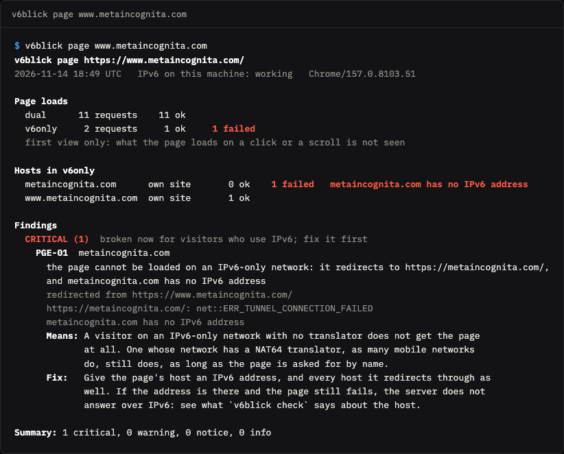
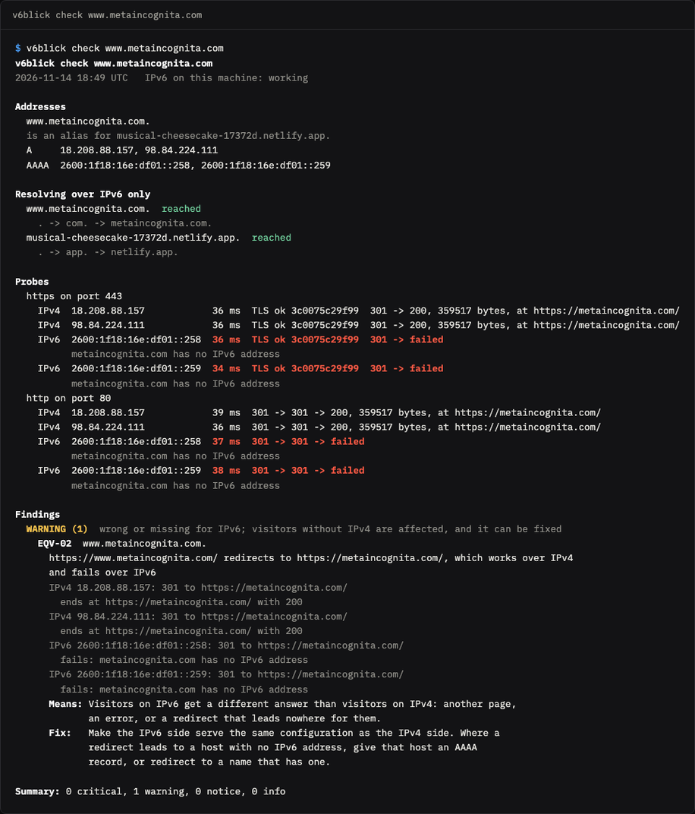
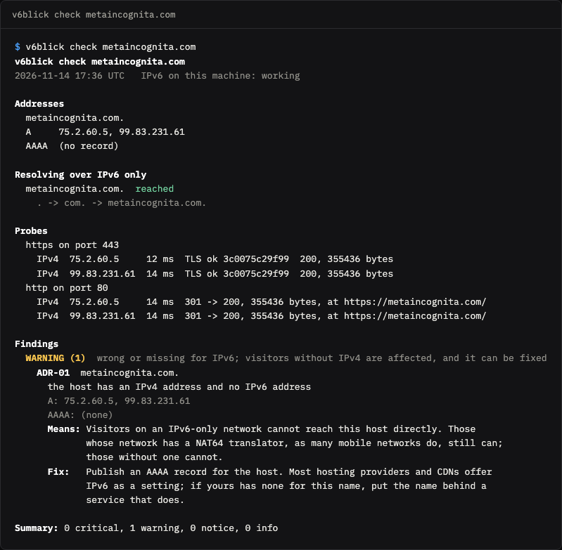
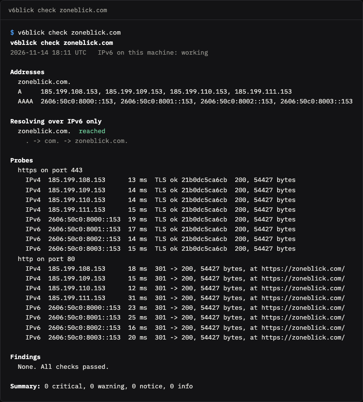

ADR
Addresses
Does the name have an IPv6 address a client can use?
- 01An A record and no AAAA record
- 02An AAAA record no client can use
- 03A zone that cannot be resolved over IPv6 alone
v6blick connects to a site over IPv4 and over IPv6 separately and compares the two. It also loads the whole page in a real browser with IPv4 taken away, and names every part that does not arrive, down to the one third-party script with no IPv6 address. Each finding says what it means and how to fix it.
www.metaincognita.com has IPv6 addresses. It redirects to metaincognita.com, which has none, so the visit ends there for anyone without IPv4.
| Host | Result |
|---|---|
| zoneblick.com | clean |
| www.metaincognita.com | 1 warning |
| metaincognita.com | 1 warning |
Real output, for the author's own sites. Each finding has its check ID, the host and the evidence, then what it means for visitors and how to fix it.




Three questions are answered for every finding: how bad is it, what does it mean for a visitor, and can it be fixed. A finding about the site's own names and servers is for whoever runs its DNS or hosting to act on, though that may mean a change at a provider. A finding about a third party is theirs to fix and yours to replace.
Broken now for visitors who use IPv6: a published address that nothing answers, or a secure connection that fails over IPv6 only. Fix it first. Exit code 2.
Wrong or missing for IPv6: visitors without IPv4 are affected, and it can be fixed. No AAAA record, another certificate, a redirect that leads nowhere. Exit code 1.
Worth a look. It may be harmless, or chance in one measurement: a slower connection over IPv6, or a page that differs between two loads. Exit code 1.
Under each finding, two short paragraphs: who is affected and how, and what to change. The same text is in the JSON output, as meaning and fix.
A browser that cannot reach a site over IPv6 quietly tries again over IPv4. A visitor who has no IPv4 gets no second try.
A growing share of clients have no IPv4 address of their own. They reach the IPv4 internet through a translator, or not at all. From a dual-stack connection, a broken IPv6 setup looks exactly like a working one.
Published measurements, not ours. Sources are in the design document.
of the top 100,000 websites qualify as fully IPv6-ready, in a 2025 study by Thottungal Valapu and Heidemann. The rest rely on resources that are IPv4-only.
of the domains pages are first loaded from support IPv6, by Internet Society Pulse measurements.
of the third-party domains those sites depend on support IPv6. This is where most pages fail.
The same page is loaded once in each, and the difference between the runs is the report. dual and v6only work today; nat64 is planned.
An ordinary connection with IPv4 and IPv6. The baseline: nothing can break here, by definition.
An IPv6-only network with a translator, as on many mobile networks. Shows what a real mobile visitor without IPv4 hits today: IPv4 addresses written directly into pages or scripts.
An IPv6-only network with no translator. Every host without a working IPv6 address fails. This is the true dependency list.
Planned. A real NAT64 network lets a client reach an IPv4-only hostname, because the network's DNS invents an IPv6 address for it. It does not help with an IPv4 address used directly, because no DNS lookup happens. v6blick will apply exactly that rule, with no gateway and no special network.
Connect over IPv6.
Allowed, and marked "reached through translation".
Refused, and reported.
What the simulation is not. It will not reproduce DNS64 with DNSSEC, or a gateway's own faults; every report will say so, and a --nat64-prefix option will point the tool at a real gateway. Many phones also run a second translator on the device (CLAT) that makes literal IPv4 addresses work, so a literal-address finding will read "fails on IPv6-only networks without CLAT".
Each check has a stable ID, a severity, and the evidence behind it. The most telling ones are comparisons: the same name, asked over IPv4 and over IPv6.
Working todayFourteen checks: addresses, reachability and equivalence in v6blick check, which needs no browser, and the page checks in v6blick page, which drives an installed Chrome.
PlannedThe literal-address checks, with the NAT64 mode, and the packet-size check.
Does the name have an IPv6 address a client can use?
Does anything answer at that address?
Is it the same site over both?
Does everything the page loads arrive?
Is an IPv4 address written into the page?
Do large responses get through?
Third partiesIn the page test, a failure at a third-party host is a notice, not a warning, because the site's owner cannot fix it, only replace or self-host it. Each host is marked as the page's own site or a third party, by the Public Suffix List, so the notices read as a list of suppliers.
Five steps, once, from the command line. No hosted service, no account, no test servers to deploy.
A and AAAA records, following CNAMEs, resolved from the root servers, with no recursive resolver in the middle.
Resolve the host's zone from the root using only IPv6 to reach each nameserver, and record the level at which that fails.
Connect, complete TLS and send one GET over IPv4, then the same over IPv6. Record the timings, the certificate, the status, each redirect and the body.
Checks are pure rules over what was recorded, so results are repeatable and every check is tested offline.
Findings by severity as text or JSON, and an exit code for CI: 0 clean, 1 notices or warnings, 2 critical, 3 the run failed.
v6blick page starts an installed Chrome with a fresh profile and points it at a proxy on 127.0.0.1 that lives only for one page load. The proxy resolves every hostname itself, applies the rules of the current network, connects or refuses, and records the outcome. It carries only what the page asks for: the browser's own update and sign-in traffic is refused. The page is loaded on an ordinary connection first, so that only what works there and fails without IPv4 is reported. A real IPv6-only test network needs root, a second interface and a gateway. A proxy needs none of that, and it runs in CI.
It will not blame the site for your network. The test machine needs working IPv6. v6blick doctor checks it. Without it, v6blick says so and exits with code 3; it never reports a site as broken because the machine it runs on has no IPv6.
The idea is not new. What is missing is one command you run yourself, against a local build or a live URL, with no servers to set up.
| Tool | Tests the site | IPv4 against IPv6 | Whole page | NAT64 | Runs locally and in CI |
|---|---|---|---|---|---|
| NAT64Check (Internet Society) | Yes | Yes | Yes, counts the resources that load | A real gateway | Hosted, or four servers of your own |
| IPv6 Web Resource Checker (IETF 124 hackathon) | Yes | No | Yes, with a browser | No | A hackathon project |
| test-ipv6.com and similar | No, the visitor's connection | No | No | No | No |
| zoneblick IPV checks (proposed) | A zone's names | Yes, over time | No | No | Yes |
| v6blick | A host or a URL | Certificate, status, redirect, body, timing | Every request, by host, own site or third party | Planned: simulated; a real gateway as an option | One binary |
Two tools by the same author, with the same check IDs, severities, JSON output and exit codes.
zoneblickA DNS zone and the names in it.
v6blickA URL and everything it loads.
zoneblickOn a schedule, with a history of every run.
v6blickOnce, on demand or in CI. It is not a monitor.
zoneblickOut of scope.
v6blickThe main subject.
zoneblickWhoever runs the DNS.
v6blickWhoever builds the site.
What it is not. Not a monitor, not a browser, not a general web auditor, and not a NAT64 gateway. It gives no performance scores and checks no security headers. Every check is about IPv6.
Eight situations v6blick is made for, each with the command that answers it. All but the last work today.
A dual-stack browser hides a dead IPv6 address by falling back. check connects over each family on its own, so an address that no longer answers is a critical finding, RCH-01.
v6blick check metaincognita.com
The certificate, the status, the redirect and the page are compared between the families. An old certificate or a stale redirect on the IPv6 side shows up as EQV-01 or EQV-02.
v6blick check https://www.metaincognita.com/
Run it against the preview build. It exits 2 on a critical finding and 1 on warnings. The runner needs IPv6: GitHub's hosted runners have none by default, so use your own.
- run: v6blick doctor - run: v6blick check --json -- "$PREVIEW_HOST"
Redirects are followed inside one address family. A redirect to a name with no IPv6 address ends there, as it does for a visitor. This is the real finding for www.metaincognita.com.
v6blick check www.metaincognita.com
Private and loopback addresses are refused by default, so a redirect cannot steer the tool at an internal host. One flag permits them.
v6blick check http://localhost:8080/ --allow-private
doctor says whether this machine has working IPv6. Without it, check says so and exits 3. It never calls a site broken because the machine it runs on has no IPv6.
v6blick doctor
page loads the page without IPv4 and lists every host it needs that has no working IPv6 address, marked as your own site or a third party: the true dependency list.
v6blick page https://metaincognita.com
Planned. Many mobile networks are IPv6-only with a NAT64 translator. That rescues IPv4-only hostnames, and not an IPv4 address written straight into a page.
v6blick page https://metaincognita.com --mode nat64
One binary, run locally or in CI. There is no hosted version and no account to create.
Today there is one way: build it from source with cargo, which takes about a minute. Ready-built binaries, an install script, a Homebrew formula, packages, a Docker image and a GitHub Action do not exist yet; they are the packaging phase. The README has the same commands with more detail.
Needs a stable Rust toolchain, version 1.88 or later. Builds the latest source and puts the v6blick binary in ~/.cargo/bin, which rustup adds to your PATH.
cargo install --git https://github.com/cschweda/v6blick v6blick --version
v0.1.0 is the tag of the first working version, after its security audit. Pinning the tag pins what you run.
cargo install --tag v0.1.0 --git \ https://github.com/cschweda/v6blick
The same result from a local checkout, if you want to read or change the code first.
git clone \ https://github.com/cschweda/v6blick cd v6blick cargo install --path .
Build it in the job, check the runner, then check the host. Put -- before a host you do not control. GitHub's hosted runners have no IPv6 by default, so this needs a runner of your own.
- run: cargo install --tag v0.1.0 --git https://github.com/cschweda/v6blick - run: v6blick doctor - run: v6blick check --json -- "$PREVIEW_HOST"
Run the install again with --force to update. It is one binary, so removing it leaves nothing behind.
# update cargo install --force --git \ https://github.com/cschweda/v6blick # remove cargo uninstall v6blick
Developed and tested on macOS. It is written to run on Linux as well, where it has not been run yet, and it is untested on Windows. The machine needs working IPv6, and the page test needs Chrome or Chromium; v6blick doctor tells you both in a second.
Everything here works today, and every output shown is real, from 14 November 2026.
A bare name is probed on port 443 and on port 80, at every address, at most four per family. Each finding says what it means and how to fix it.
$ v6blick check metaincognita.com
...
Findings
WARNING (1) wrong or missing for IPv6; visitors without IPv4 are affected, and it can be fixed
ADR-01 metaincognita.com.
the host has an IPv4 address and no IPv6 address
A: 75.2.60.5, 99.83.231.61
AAAA: (none)
Means: Visitors on an IPv6-only network cannot reach this host directly. Those
whose network has a NAT64 translator, as many mobile networks do, still can;
those without one cannot.
Fix: Publish an AAAA record for the host. Many hosting providers and CDNs offer
IPv6 as a setting; if yours has none for this name, put the name behind a
service that does.
Summary: 0 critical, 1 warning, 0 notice, 0 info
Whether IPv4 and IPv6 work here, and whether a Chrome or Chromium is installed. The address shown is a documentation address; yours will be your own.
$ v6blick doctor
IPv4 working a root server answered over IPv4
IPv6 working a root server answered over IPv6
this machine's IPv6 address is 2001:db8:42::1c
Chrome found /Applications/Google Chrome.app/...
This machine can run `v6blick check`.
0 is clean, 1 notices or warnings, 2 a critical finding, 3 a failed run. That is all a script or a CI step needs.
$ v6blick check zoneblick.com > /dev/null; echo $? 0 $ v6blick check metaincognita.com > /dev/null; echo $? 1
--json prints one document: what was recorded, then the findings. With jq:
$ v6blick check www.metaincognita.com --json | jq -r '.findings[] | "\(.severity) \(.check_id) \(.summary)"' warning EQV-02 https://www.metaincognita.com/ redirects to https://metaincognita.com/, which works over IPv4 and fails over IPv6 $ v6blick check metaincognita.com --json | jq -r '.findings[] | .fix' Publish an AAAA record for the host. Many hosting providers and CDNs offer IPv6 as a setting; if yours has none for this name, put the name behind a service that does.
In an installed Chrome or Chromium, once on an ordinary connection and once without IPv4. The browser gets a fresh profile, which is deleted afterwards. A small page takes about seven seconds.
$ v6blick page www.metaincognita.com
Page loads
dual 11 requests 11 ok
v6only 2 requests 1 ok 1 failed
Hosts in v6only
metaincognita.com own site 0 ok 1 failed metaincognita.com has no IPv6 address
www.metaincognita.com own site 1 ok
Findings
CRITICAL (1) broken now for visitors who use IPv6; fix it first
PGE-01 metaincognita.com
the page cannot be loaded on an IPv6-only network: it redirects to https://metaincognita.com/,
and metaincognita.com has no IPv6 address
...
$ echo $?
2
A full address is probed with its own scheme, port and path, and nothing else.
v6blick check https://www.metaincognita.com/
Private and loopback addresses are refused unless you permit them.
v6blick check http://localhost:8080/ \ --allow-private
Planned, and not built.
An IPv6-only network with a NAT64 translator, as on many mobile networks, and the checks for IPv4 addresses written into a page.
v6blick page https://metaincognita.com --mode nat64
One self-contained HTML file, or many pages from a list.
v6blick page https://metaincognita.com --html report.html v6blick page --urls urls.txt
Early daysPhases 0 and 1 work: check, page and doctor, fourteen checks, text and JSON output. There are no ready-built binaries yet, and the NAT64 mode and the HTML report are not built. The README lists the phases and what each one delivers; the design has the rest.
Security auditOne red team and blue team audit so far, of 0.1.0 on 14 November 2026: no critical or high finding, five medium and twelve low, all fixed but two low ones that are documented. The page test is newer than that audit and has not been audited yet. The README keeps the full record: what broke, what held, and what is still open.
Polite by designBounded concurrency, a timeout on every step, at most one retry, plain GET requests with a User-Agent that names v6blick, and no crawling beyond what was asked for. Test your own sites, or sites you have permission to test.